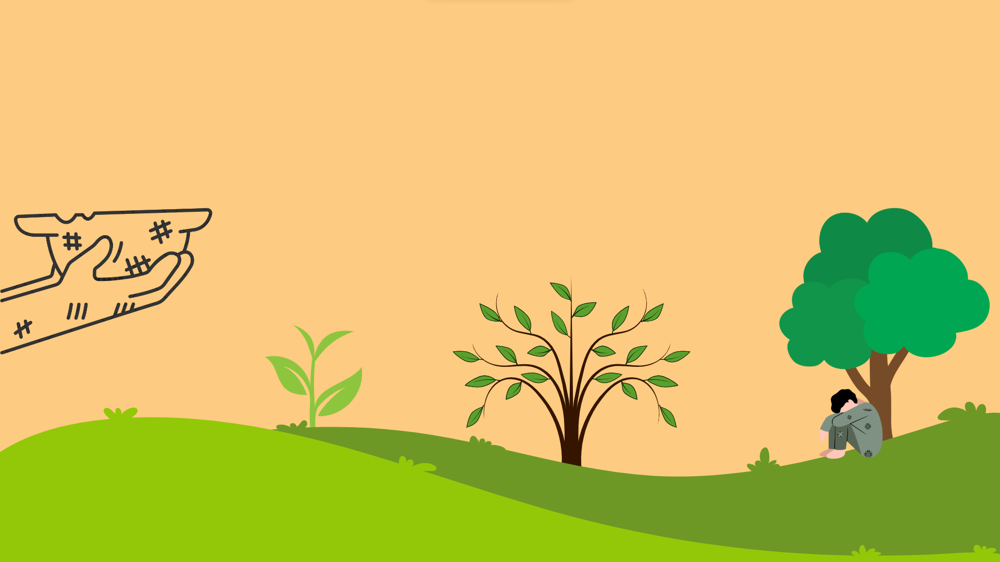

Fome e agricultura sustentável
Diantes tantos problemas modernos a serem abordados, a fome é uma das que é mais antiga no mundo. A fome pode causar diversos problemas como pressão alta e diabetes, assola muitos países e muitos outros já a superaram, a partir deste trabalho iremos abordar como a fome é um grande problema, as causas que fizeram ela se tornar um problema e países que conseguiram dar a volta por cima contra a fome e seus métodos

texto
Causas
- Falta de comida:
Em muitos lugares, as pessoas simplesmente não têm acesso suficiente a alimentos nutritivos.
- Pobreza: Muitas famílias não têm dinheiro para comprar comida suficiente, mesmo que esteja disponível.
- Problemas de distribuição:
Às vezes, a comida existe, mas não é distribuída de maneira justa ou eficiente para alcançar todos que precisam.
- Conflitos e desastres naturais:
Guerras e desastres como terremotos podem destruir plantações, interromper a produção de alimentos e dificultar o transporte, aumentando a escassez de alimentos.
- Falta de acesso à água potável:
A água é crucial para cultivar alimentos. Quando as pessoas não têm acesso à água limpa, torna-se difícil cultivar alimentos em quantidade suficiente.
Consequências
A falta de acessibilidade a uma alimentação adequada pode causar problemas como: